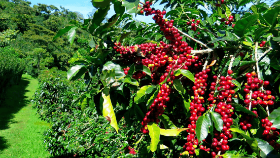

Có 15 bài viết liên quan sản phẩm chính
-

Kỹ thuật trồng cây cà phêCà phê chè Catimor khoảng 3.000cây/ha, hàng cách hàng 2m, cây cách cây 1m. Nếu đất xấu có thể trồng dày hơn.1 giờ trước
-
 Quy trình kỹ thuật canh tác cây cà phê chèTrồng tốt nhất từ tháng 6 đến 15/8 hàng năm. - Cách trồng: Đất trong hố trồng cà phê cần đảo trộn đều, dùng cuốc móc 1 lỗ nhỏ giữa hố.1 giờ trước
Quy trình kỹ thuật canh tác cây cà phê chèTrồng tốt nhất từ tháng 6 đến 15/8 hàng năm. - Cách trồng: Đất trong hố trồng cà phê cần đảo trộn đều, dùng cuốc móc 1 lỗ nhỏ giữa hố.1 giờ trước -
 Giá trị dinh dưỡng và công dụng của hạt điềuHạt điều là hạt thuộc họ Anacardium occidentale có nguồn gốc từ Brazil được trồng nhiều ở các tỉnh phía Nam của Việt Nam1 giờ trước
Giá trị dinh dưỡng và công dụng của hạt điềuHạt điều là hạt thuộc họ Anacardium occidentale có nguồn gốc từ Brazil được trồng nhiều ở các tỉnh phía Nam của Việt Nam1 giờ trước -
Hạt macca có tác dụng gì?Mắc ca hay mác ca là tên gọi từ cách phiên âm trong tiếng Việt của chi thực vật có danh pháp khoa học Macadamia1 giờ trước
-
Hạt Sachi: Loại hạt quý cần thiết cho sức khỏeSachi được ví như “ông vua của các loại hạt”. Đây là loại hạt có kích thước lớn, giàu omega-3, omega-6, protein, vitamin và khoáng chất.1 giờ trước
-
Giới thiệu giống cây SachiCây Sachi rất dễ trồng và có thể trở thành loài cây công nghiệp quý giúp nhiều hộ nông dân có thể nâng cao thu nhập. Cây giống Sachi tính từ thời điểm trồng 2 năm là đã bắt đầu vào tuổi thu hoạch.1 giờ trước
-
Những điều cần biết về hương vị cà phêMỗi loại cà phê đều mang trong mình một hương vị và màu sắc khác nhau và chỉ những người sành cà phê mới có thể nhận biết được.1 giờ trước
Tin tức khác
-
Nông sản Việt Nam
Nông sản Việt Nam cũng ngày càng được ưa chuộng tại châu Âu. Tại Đức, Việt Nam hiện là nguồn cung hạt điều số 1 nhờ sản lượng ổn định và chất lượng đảm bảo. -
Mở đường đưa nông sản Việt vươn xa
Vượt qua tiêu chuẩn khắt khe của thị trường nhập khẩu, các doanh nhân đã mang thương hiệu cà phê, gạo, đậu đỏ… của Việt Nam ra thế giới, mang nhiều giá trị gia tăng cho sản xuất nội địa.